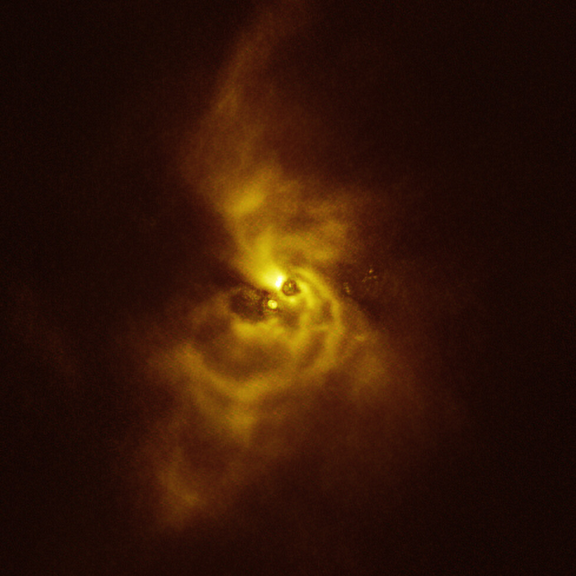
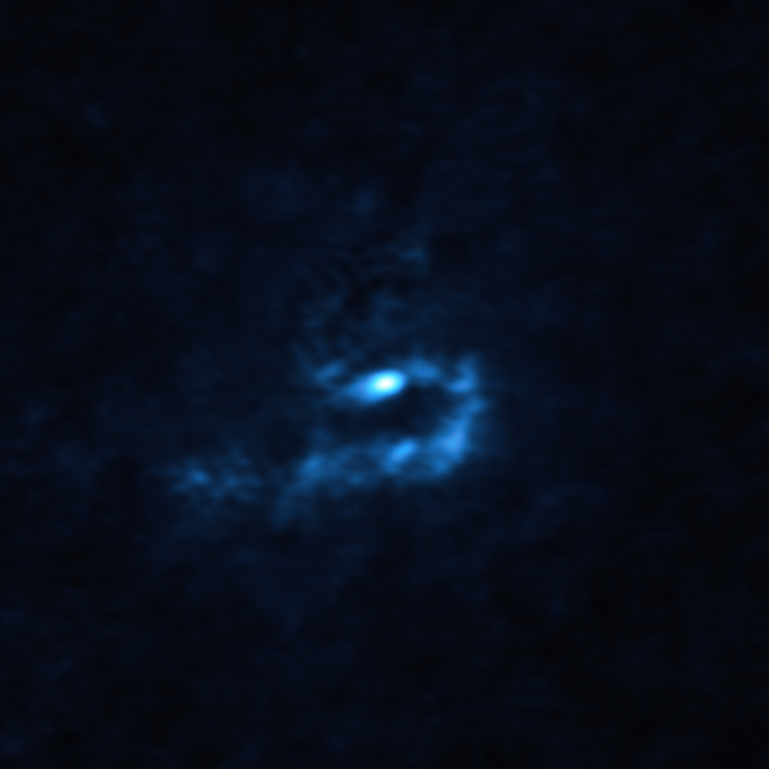

Una nueva y espectacular imagen publicada hoy por el Observatorio Europeo Austral nos da pistas sobre cómo podrían formarse planetas tan masivos como Júpiter. Utilizando el Very Large Telescope (VLT) de ESO y el Atacama Large Millimeter/submillimeter Array (ALMA), los investigadores han detectado, cerca de una estrella joven, grandes cúmulos de polvo que podrían colapsar para crear planetas gigantes.
Imagen combinada de SPHERE y ALMA del material que orbita alrededor de V960 Mon. Crédito: ESO/ALMA (ESO/NAOJ/NRAO)/Weber et al.
“Este descubrimiento es realmente cautivador, ya que marca la primera detección, alrededor de una estrella joven, de cúmulos que tienen el potencial de dar lugar a planetas gigantes”, sostiene Alice Zurlo, investigadora de la Universidad Diego Portales, Chile, que participó en las observaciones.
El trabajo se basa en una cautivante imagen obtenida con el instrumento Spectro-Polarimetric High-contrast Exoplanet REsearch (SPHERE) del VLT de ESO que muestra detalles fascinantes del material que hay alrededor de la estrella V960 Mon. Esta joven estrella se encuentra a más de 5.000 años luz de distancia en la constelación de Monoceros, y atrajo la atención de los astrónomos cuando repentinamente aumentó su brillo más de veinte veces en 2014. Las observaciones de SPHERE realizadas poco después del inicio de este "estallido" de brillo revelaron que el material que orbita alrededor de V960 Mon se está agrupando en una serie de intrincados brazos espirales que se extienden a distancias más grandes que todo el Sistema Solar.
Este hallazgo motivó a los astrónomos a analizar las observaciones de archivo del mismo sistema realizadas con ALMA, del cual ESO es socio. Las observaciones del VLT sondean la superficie del material polvoriento alrededor de la estrella, mientras que ALMA puede examinar su estructura más profundamente. “Con ALMA, se hizo evidente que los brazos espirales se están fragmentando, lo que resulta en la formación de aglomeraciones con masas similares a las de los planetas”, dice Zurlo.
Los astrónomos creen que los planetas gigantes se forman por acreción del núcleo, cuando los granos de polvo se juntan, o bien por inestabilidad gravitacional, cuando grandes fragmentos del material alrededor de una estrella se contraen y colapsan. Si bien los investigadores han encontrado previamente evidencia para el primero de estos escenarios, las pruebas que respaldan el segundo han sido escasas.
“Hasta ahora, nadie había visto una observación real de inestabilidad gravitacional a escala planetaria”, afirma Philipp Weber, investigador de la Universidad de Santiago de Chile, quien dirigió el estudio publicado hoy en The Astrophysical Journal Letters.
"Nuestro grupo lleva más de diez años buscando indicios de cómo se forman los planetas, y no podríamos estar más emocionados por este increíble descubrimiento", señala Sebastián Pérez, miembro del equipo de la Universidad de Santiago de Chile.
Los instrumentos de ESO ayudarán a los astrónomos a revelar más detalles de este cautivador sistema planetario en formación, y el Extremely Large Telescope (ELT) de ESO desempeñará un papel clave. Actualmente en construcción en el desierto de Atacama en Chile, el ELT podrá observar el sistema con más detalle que nunca, recopilando información crucial sobre él. “El ELT permitirá explorar la complejidad química que rodea a estos cúmulos, ayudándonos a descubrir más sobre la composición del material a partir del cual se están formando planetas potenciales”, concluye Weber.
Información adicional
Open Access paper: Weber et al. (2023), Spirals and Clumps in V960 Mon: Signs of Planet Formation via Gravitational Instability around an FU Ori Star?
El equipo detrás de este trabajo está compuesto por jóvenes investigadores de diversas universidades e institutos chilenos, en el marco del centro de investigación Núcleo Milenio sobre Exoplanetas Jóvenes y sus Lunas (YEMS), financiado por la Agencia Nacional de Investigación y Desarrollo de Chile (ANID) y su programa Iniciativa Científica Milenio. Las dos instalaciones utilizadas, ALMA y VLT, están ubicadas en el desierto de Atacama en Chile.El equipo está compuesto por: P. Weber (Departamento de Física de la Universidad de Santiago de Chile, Chile [USACH]; Núcleo Milenio sobre Exoplanetas Jóvenes y sus Lunas, Chile [YEMS]; Center for Interdisciplinary Research in Astrophysics and Space Exploration [CIRAS] de la Universidad de Santiago de Chile, Chile), S. Pérez (USACH; YEMS; CIRAS), A. Zurlo (YEMS; Núcleo de Astronomía de la Universidad Diego Portales, Chile [UDP]; Escuela de Ingeniería Industrial de la Universidad Diego Portales, Chile), J. Miley (Joint ALMA Observatory, Chile; Observatorio Astronómico Nacional de Japón, Chile), A. Hales (Observatorio Nacional de Radioastronomía, EE.UU.), L. Cieza (YEMS; UDP), D. Principe (MIT Kavli Institute for Astrophysics and Space Research, EE.UU.), M. Cárcamo (YEMS; CIRAS; USACH, Facultad de Ingeniería, Departamento de Ingeniería Informática, Chile), A. Garufi (INAF, Osservatorio Astrofisico di Arcetri, Italia), Á. Kóspál (Observatorio Konkoly, Centro de Investigación de Astronomía y Ciencias de la Tierra, Hungría; Universidad ELTE Eötvös Loránd, Instituto de Física, Hungría; Instituto Max Planck de Astronomía, Alemania), M. Takami (Instituto de Astronomía y Astrofísica, Academia Sinica, Taiwán), J. Kastner (Instituto de Tecnología de Rochester, EE.UU.), Z. Zhu (Universidad de Nevada, EE.UU.) y J. Williams (Instituto de Astronomía, Universidad de Hawái en Manoa, EE.UU.).
ALMA es una instalación astronómica internacional, asociación de ESO, la Fundación Nacional de Ciencias de EE.UU. (NSF) y los Institutos Nacionales de Ciencias Naturales (NINS) de Japón en cooperación con la República de Chile. Está financiado por ESO en nombre de sus Estados miembros, por NSF en cooperación con el Consejo Nacional de Investigación de Canadá (NRC) y el Consejo Nacional de Ciencia y Tecnología (NSTC) de Taiwán, y por NINS en cooperación con la Academia Sinica (AS) de Taiwán y el Instituto de Astronomía y Ciencias Espaciales de Corea (KASI). La construcción y operaciones de ALMA están lideradas por ESO, el Observatorio Nacional de Radioastronomía (NRAO) y el Observatorio Astronómico Nacional de Japón (NAOJ). El Joint ALMA Observatory (JAO) proporciona el liderazgo unificado y la gestión de la construcción, puesta en marcha y operación de ALMA.
El Observatorio Europeo Austral (ESO) pone a disposición de la comunidad científica mundial los medios necesarios para desvelar los secretos del Universo en beneficio de todos. Diseña, construye y opera observatorios de vanguardia basados en tierra y promueve la colaboración internacional en astronomía. Establecida en 1962, ESO cuenta con el apoyo de 16 Estados Miembros (Alemania, Austria, Bélgica, Dinamarca, España, Finlandia, Francia, Irlanda, Italia, Países Bajos, Polonia, Portugal, Reino Unido, República Checa, Suecia y Suiza), junto con Chile como país anfitrión y Australia como socio estratégico. Su sede se encuentra cerca de Múnich (Alemania), y opera los sitios de observación La Silla, Paranal y Chajnantor en el desierto chileno de Atacama. En Cerro Armazones, cerca de Paranal, se está construyendo el Telescopio Extremadamente Grande (ELT), "el ojo más grande del mundo para mirar el cielo".